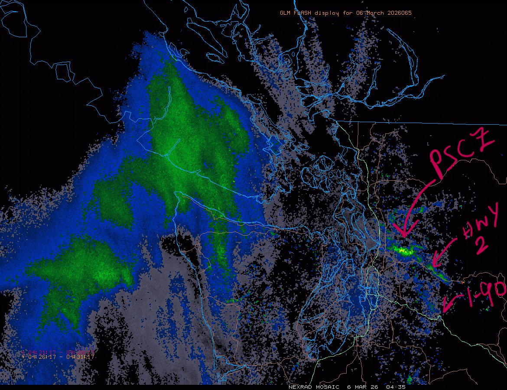
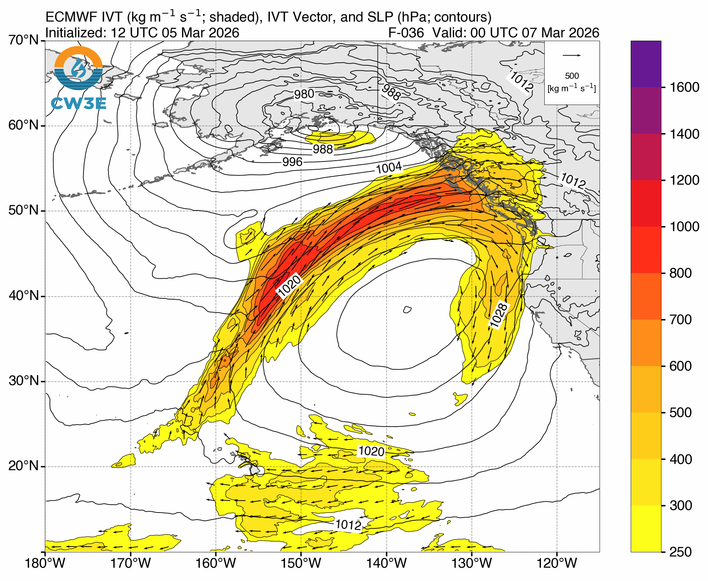
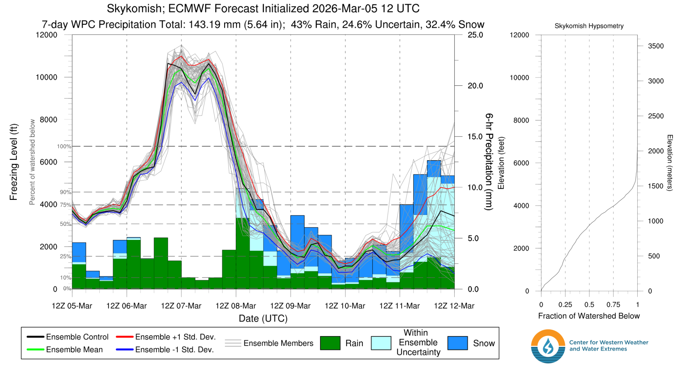
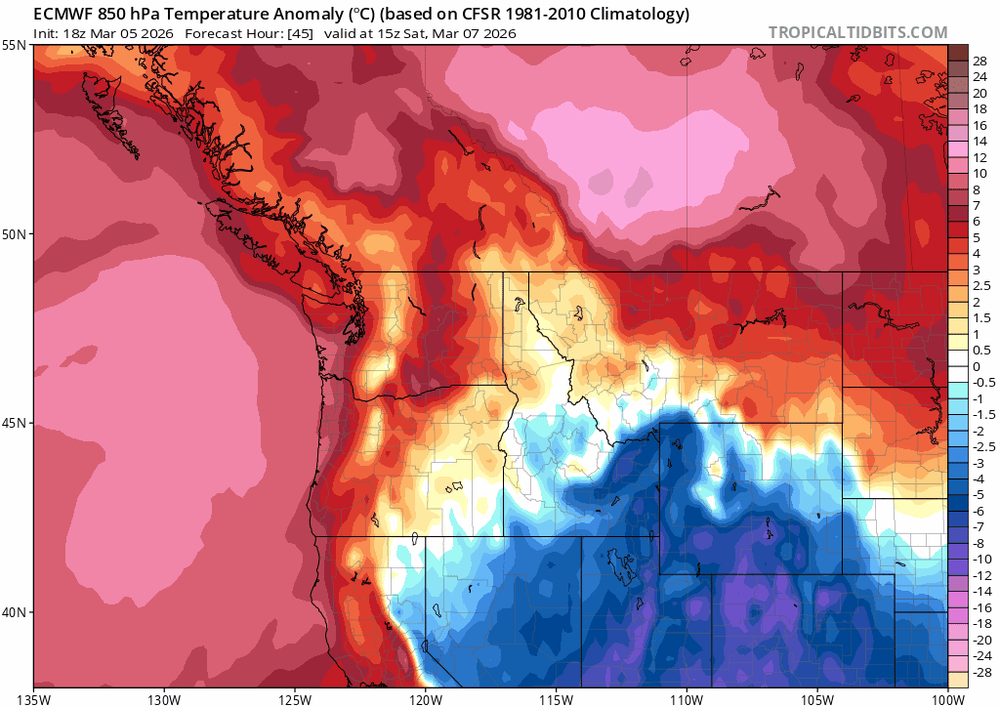
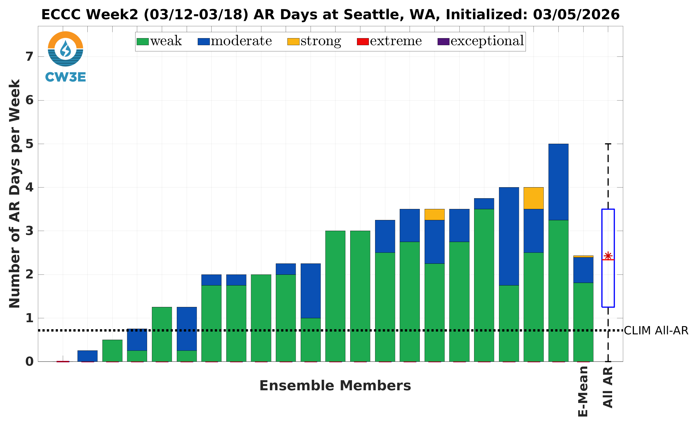

Spring is knocking at the door, but winter is just starting to party 🎉
Welcome to The Dendritic Growth Zone!
Past Week's Recap
Happy meteorological spring, everyone! 1 March marks the first day of spring in the meteorological calendar, but we haven't been missing much sun or warmth. I don't have to be the first to tell you that January and February were much more like April and May. But we may finally be turning a corner after our last warm spell rounded out the month of February.
This past week has brought lots of active weather to the region. A frontal system came through Tuesday with relatively high freezing levels (~5000 feet) and gusty winds. After the warm front moved through, the cold front moved through, dropping snow levels to more favorable levels, allowing snow to stack up above 5k, and bringing a few inches here or there for the low lying passes.
Behind that front, onshore flow was maintained and allowed precipitation to continue to fall in the mountains. Although we would prefer it to be a bit colder, this is a classic PNW snow maker scenario, with winds oriented west-northwest with ample moisture. The cold air aloft also allowed for the development of low level instability, as warmer air near the surface that was lifted could rise freely for a portion of the lower atmosphere. Combined with the strong westerly flow around the Olympics, this convection offered further support for the development of the Puget Sound Convergence Zone (PSCZ) along Highway 2 east of Everett.
🧙♂️ Forecast Discussion
Short-term (Friday-Sunday)
The active period keeps on churning through the weekend with conditions flip-flopping pretty much every day. A weak atmospheric river approaches the central coast of British Columbia on Friday, which brings along our old friend, warm & moist air. As this warm front approaches, precipitation will continue to fall in the mountains as freezing levels increase above 5000 feet. We are left with the extra warm dregs of this storm as freezing levels shoot up to the moon on Saturday (think > 9000 feet).

But these conditions won't last for long! Freezing levels begin to drop throughout Sunday as fast as they rose. Snow should begin to
fall at lower elevations starting Sunday afternoon. Then the real fun begins as we transtion to possibly the best sustained set up
we've seen in weeks, if not all winter.

Medium-Term (Monday-Wednesday)
Oh boy! Gulf of Alaska troughing is set to return with a vengance, and there is fortunately strong ensemble agreement that
it will stick around for a few days and throw some good old snowy haymakers in the form of frontal systems at our mountains. This will be a refreshing change of pace
and something we have long awaited. The most productive periods will be likely be on Tuesday and Wednesday, with another large event
possible on Thursday, although there is still plenty of time for that to change.

We have two main ingredients that give us confidence in this set up.
1. Strong ensemble agreement: Both the American (GFS) and European (ECMWF) ensembles are in strong agreement that Gulf of Alaska troughing with cold air aloft will be the dominant pattern for the next week.
2. Longwave orientation: With this ensemble agreement, we also see agreement on the position of the trough. The main longwave feature sits close to the Alaska/BC coast, which has the effect of ushering in flow off the northern Pacific. A trough that is centered over the Gulf of Alaska or slightly further south would run the risk of bringing in warmer air from the southwest. This orientation keeps the moisture tap turned on, alongside the air conditioning.
🧙🔮🧙♂️ Reading the crystal ball - 7+ day outlook
Once this week passes, things are more up in the air (per usual). Springtime is an especially dynamic period as the battle between winter and summer gets hashed out. Right now, a return to warmer weather and enhanced risk of atmospheric river activity is predicted by the Center for Western Water and Weather Extremes, with somewhere around 2 days having AR conditions. But we'll worry about that next week, maybe the cold air can stick around!

🚧👷Cascade Mountain Weather Updates👷🚧!
Stickers have arrived! Give us a shout if you want one! We'll also soon be designing some hats and possibly shirts, so reach out if you're interested.
❄️ Snowfall
Weekend Snow Accumulation Forecast
| Site | Through 4am Saturday | Through 4am Sunday | Weekend Snow Accumulation (4pm Thursday through 4am Monday 2 Mar) |
|---|---|---|---|
| Mt. Baker (4500') | 3-5" | 5-7" | 10-15" |
| Washington Pass | 1-4" | 2-5" | 4-6" |
| Stevens Pass (4500') | 1-3" | 2-5" | 8-12" |
| Hurricane Ridge | 0-1" | 0-1" | 2-4" |
| Blewett Pass | 0-1" | 0-1" | 0-2" |
| Snoqualmie Pass | 1-3" | 1-3" | 3-6" |
| Crystal (5000') | 1-2" | 1-2" | 2-5" |
| Paradise | 3-6" | 4-7" | 7-11" |
| White Pass (5000') | 0-2" | 0-2" | 1-4" |
🧊 Freezing Level
- Friday: 3500-8000 feet (rapid rise)
- Saturday: 6000-10000 feet
- Sunday: 2500-6000 feet (rapid fall)
🎿 Our Recommendations
Best Choice This Weekend: Getting out to Stevens on Friday and working on Saturday
Take advantage of this week's goods before the rain comes!
Stevens Pass got several inches of snow in these past few days. Coming from the Seattle area, a less than 2.5 hour drive
sounds fantastic.
But avoiding the slopes Saturday will likely be a good idea, unless you are a psycho who enjoys low tide, shark-laden skiing in the rain while
avalanche danger increases.
Runner-Up: Waiting until Tueday or Wednesday to ski anywhere
I know it's far out, but the signs are looking good for a " it doesn't matter where go go, its gonna be good" type day.
Honorable mention: Night laps at Stevens on Sunday
I'm giving Stevens some love for having night skiing and being higher elevation than Snoqualmie. White Pass likely won't be getting as much by Sunday under this northwest flow.